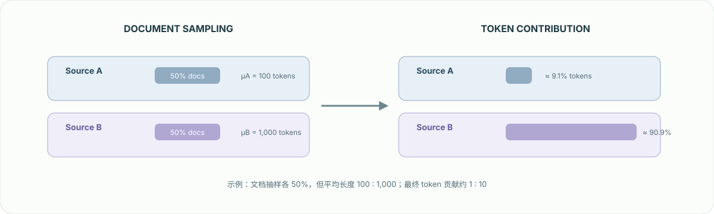

MODULE 14 / LLM DATA ENGINEERING
多源数据混合配比
从文档抽样到 token exposure，推导多源训练配比，并理解 DoReMi、RegMix、Data Mixing Laws 与动态混合。
如果一个来源只有少量高价值文档，另一个来源拥有海量长文档，简单地“每个来源各抽一半文档”，最终训练 token 真的会各占一半吗？数据混合首先是一个概率分配问题，其次才是训练数据目录里的百分比。
为什么需要混合：单一来源不能代表所有能力
The Pile 是一个经典案例：它是约 825 GiB 的英语语料，由 22 个不同子集构成，覆盖网页、书籍、学术、代码、问答和专业来源。它展示了多域训练数据的组织方式，但不是一个适用于所有模型的标准配方。
混合策略需要回答：目标模型要学习什么？总 token budget 有多大？各来源质量和长度如何？某些来源是否会重复采样？训练的不同阶段是否需要不同数据分布？这些因素共同决定有效混合。

关键推导：文档抽样概率如何转成 token 比例
设来源 的文档抽样概率为 ，平均文档 token 长度为 。如果按文档独立抽样，并近似认为长度分布稳定，则来源 的期望 token 贡献比例为：
反过来，如果目标是 token 份额 ，可以用平均长度反推文档抽样概率：
交互实验：50% 文档不等于 50% Tokens
用两个合成来源做计算：A 平均每篇 100 tokens，B 平均每篇 1,000 tokens。调整 A 的文档抽样概率，再指定目标 token 份额，观察需要怎样反推抽样概率。
从手工配比到算法搜索
| 方法 | 核心思路 | 需要注意 |
|---|---|---|
| 固定启发式 | 根据数据质量、领域目标和预算设定静态权重 | 是必要 baseline；比例必须在 token 口径下核验 |
| DoReMi | 在小型 proxy 上使用 Group DRO 学习 domain weights，再重采样训练大模型 | 论文报告 280M proxy → 8B 目标模型；结果受数据域和评测协议约束 |
| Data Mixing Laws | 用小规模混合实验拟合性能随混合比例变化的函数 | 模型、token budget 和域间交互变化时要重新校准 |
| RegMix | 训练多个小模型覆盖不同混合配方，再回归预测未试验配方 | proxy 结果能否迁移到目标规模是关键假设 |
| RegMix-D | 利用 proxy 训练过程中的 loss trajectories 预测分阶段的动态配比 | 支持离线计划和在线调整；需要监控动态调度稳定性 |
DoReMi：不是“质量最高的域就给最大权重”
DoReMi 用 group distributionally robust optimization 学习域权重，而不是手工把 Wikipedia 或书籍一律上采样。论文报告在 The Pile 实验中，280M proxy 得到的权重用于 8B 模型；相对默认权重，平均 few-shot accuracy 提高 6.5 个百分点，并以 2.6 倍更少的训练步数达到 baseline accuracy。这些结果属于论文的实验设置。
RegMix 与 2026 年 RegMix-D
RegMix 将混合比例搜索写成回归问题。ICLR 2025 论文报告训练 512 个 1M 参数 proxy，每个使用 1B tokens，再用预测的混合比例训练 1B 参数、25B token 的目标模型。2026 年 11 月发表的 RegMix-D 进一步使用 proxy 的完整 loss trajectory，生成离线或在线的阶段性混合计划；其论文在 The Pile 的 1B / 25B-token 设置和 7B / 100B-token 迁移实验中报告结果。它是最新研究方向，不意味着所有训练都必须动态混合。
工程实现：先算权重，再抽样，再核算真实 token
import numpy as np
def document_sampling_probs(target_token_share, mean_tokens):
q = np.asarray(target_token_share, dtype=float)
mu = np.asarray(mean_tokens, dtype=float)
if q.shape != mu.shape or np.any(q < 0) or np.any(mu <= 0):
raise ValueError("invalid mixture inputs")
raw = q / mu
return raw / raw.sum()
# Desired token mix: 50% short documents, 50% long documents
# Mean lengths: 100 and 1,000 tokens
p_docs = document_sampling_probs([0.5, 0.5], [100, 1000])
# approximately [0.909, 0.091]
rng = np.random.default_rng(seed=7)
source_ids = rng.choice(2, size=1_000_000, p=p_docs)抽样完成后，不能只报告配置权重。应基于最终 tokenizer 和实际训练 packer 统计每个来源的 token 数、重复曝光次数、被截断比例和被过滤比例。
配比系统的失败模式
- 文档权重冒充 token 权重：长文档来源会被隐式放大。
- 来源内部高度异质：一个 domain weight 可能掩盖域内质量差异，需要更细粒度分层。
- 上采样过度：有限语料被重复曝光，增加记忆和过拟合风险。
- proxy 迁移失败：小模型上最优的混合比例未必在大模型、不同 token budget 或不同 tokenizer 下保持最优。
- 只看平均分：平均 benchmark 指标可能掩盖代码、多语言、知识或推理能力之间的 trade-off。
参考资料
- Gao et al. (2020), The Pile: An 800GB Dataset of Diverse Text for Language Modeling。
- Xie et al. (2023), DoReMi: Optimizing Data Mixtures Speeds Up Language Model Pretraining，NeurIPS 2023。
- Ye et al. (2024), Data Mixing Laws: Optimizing Data Mixtures by Predicting Language Modeling Performance。
- Liu et al. (2025), RegMix: Data Mixture as Regression for Language Model Pre-training，ICLR 2025。
- Zhao et al. (2026), RegMix-D: Dynamic Data Mixing via Proxy Training Trajectories，Findings of IJCNLP-AACL 2026。